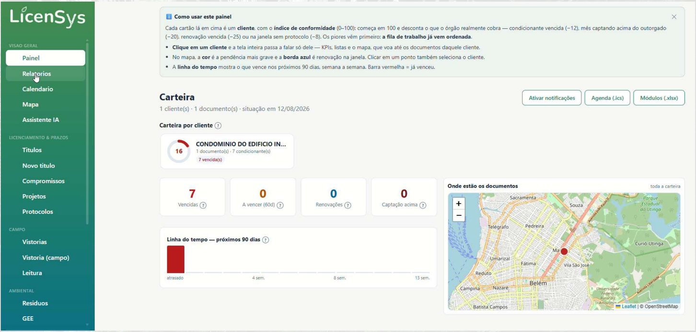

Prazos sob controle
Acompanhar prazos, controlar o cumprimento de condicionantes, armazenar documentos e comprovantes, monitorar renovações e receber alertas preventivos sobre obrigações próximas do vencimento ou já vencidas.

AYIO / Produtos / LicenSys

Licenças, outorgas, condicionantes, documentos e prazos em um único ambiente digital — com inteligência artificial para interpretar documentos e gerar relatórios.
O desafio
Gerenciar obrigações ambientais não deveria ser tão complicado. Licenças, outorgas, condicionantes, documentos e prazos precisam de acompanhamento constante — e quando essas informações estão espalhadas entre planilhas, pastas, e-mails e diferentes profissionais, manter o controle vira um desafio. Um prazo esquecido pode se transformar em um grande problema.
Conheça a LicenSys
Acompanhar prazos, controlar o cumprimento de condicionantes, armazenar documentos e comprovantes, monitorar renovações e receber alertas preventivos sobre obrigações próximas do vencimento ou já vencidas.
A IA auxilia na interpretação de documentos e na geração de relatórios e documentos administrativos, reduzindo tarefas manuais e tornando a gestão ambiental mais eficiente e rastreável.
Transformar a gestão ambiental de um processo manual e reativo em uma operação organizada, preventiva e orientada à conformidade regulatória — reduzindo risco de descumprimentos, perda de prazos e autuações.
Com a LicenSys, sua empresa pode centralizar
O painel
Índice de conformidade por cliente, mapa dos documentos, linha do tempo dos próximos 90 dias e alertas do que venceu — a visão geral e o detalhe na mesma tela.

Benefícios
Todas as informações ambientais em um só lugar.
Maior controle sobre vencimentos e renovações.
Arquivos e comprovantes onde deveriam estar.
Redução de atividades repetitivas com apoio de IA.
Acompanhamento rápido do que importa agora.
Redução de riscos operacionais e de não conformidade.
Processo rastreável e orientado à regulação.
Todas as obrigações da empresa em uma só leitura.
Para quem é a LicenSys?
Que possuem licenças e obrigações ambientais.
Que gerenciam processos de diferentes clientes.
Que precisam acompanhar documentos, condicionantes e prazos.
Que necessitam manter processos ambientais organizados e atualizados.